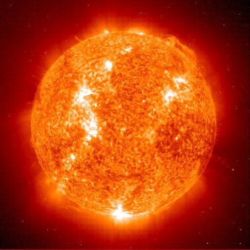

Sola er en glødende kule av gass uten skarpt avgrenset fast overflate. Sola er den nærmeste stjernen til Jorda. Med hensyn til størrelse og masse er den en gjennomsnittlig stjerne i Melkeveisystemet. Planetene i solsystemet går i bane rundt Sola. Lyset fra Sola bruker omtrent åtte minutter fra Solas overflate til Jorden. Avstanden mellom Sola og Jorda er omtrent 150 000 000 km. Sola er så stor at den ville kunnet romme over én million jordkloder.